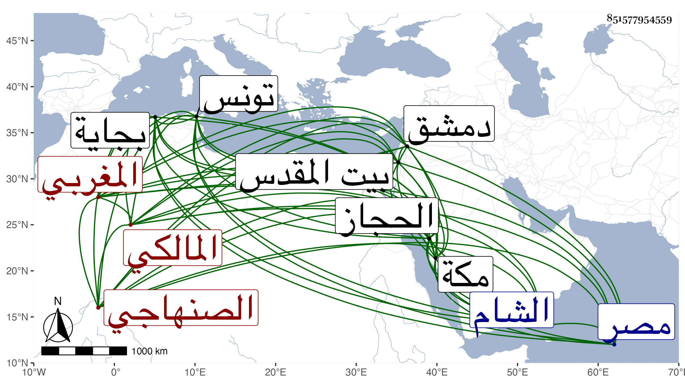

0902Sakhawi.DawLamic.ITO20230111-ara1.EIS1600.851577954559
Biography ID: 851577954559
903
سالم بن إبراهيم بن عيسى الصنهاجي المغربي المالكي . رأيته فيمن عرض عليه ابن أبي اليمن بمكة وكأنه الذي ولد بمشدالة بعد السبعين وسبعمائة تقريبا ونشأ ببجاية واشتغل بتونس إلى أن فضل وارتحل فوقع في أسر الكفار سنة أربع وثلاثين وثمانمائة وناظر الأساقفة ببلادهم فأفحمهم ودام عندهم مدة ثم أخرجوه ، وسمع بالحجاز ومصر وغيرهما كدمشق ومن محفوظاته الشفا وولي قضاء المالكية بدمشق ثم قضاء القدس ثم عاد إلى الشام وسار في ذلك كله سيرة حسنة بحرمة وصرامة وكلمة نافذة وعفة ونزاهة ، وحدث ودرس وأفتى ، وكنت جوزت أن يكون الزواوي الآتي وانه توفي سنة ثلاث وسبعين ثم استبعدت ذلك
